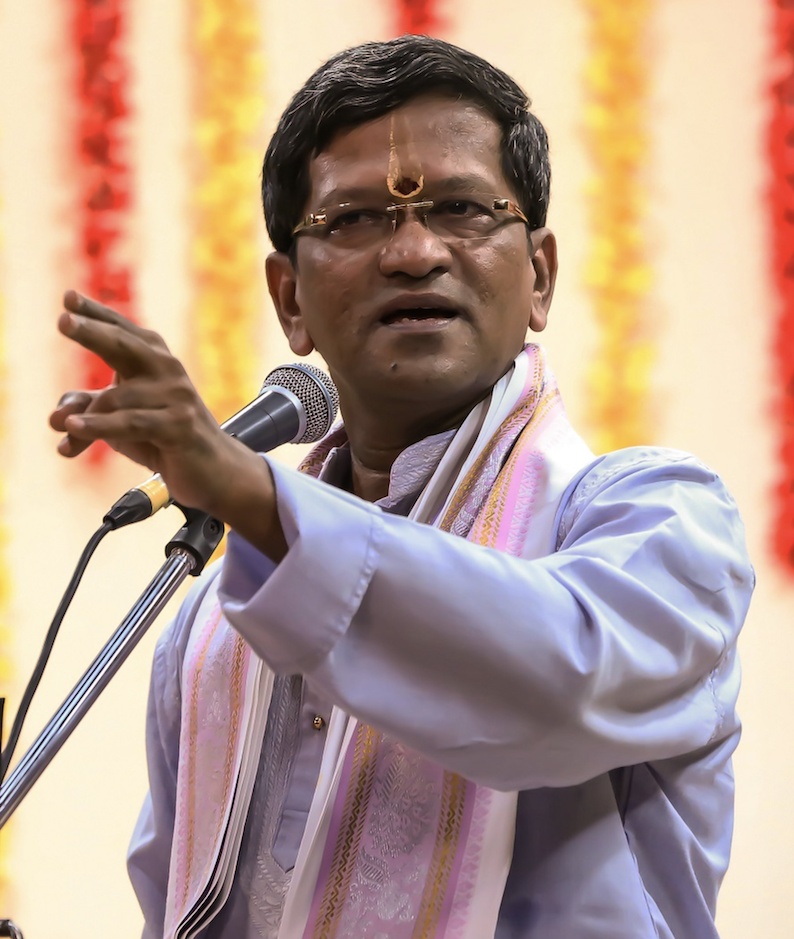

Meet the Artists & Guru
Paramacharya School of Music • Musicians and Dignitaries bringing the Vocal Graduation Concert to life.

Guru Smt. Geetha Ravi
Guru & Director, Paramacharya School of MusicSmt. Geetha Ravi is the founder and artistic director of Paramacharya School of Music, where she has cultivated a nurturing environment for students to explore and deepen their connection to Carnatic classical music.
Geetha Ravi is a B-High graded Carnatic vocal artist with All India Radio (AIR Thrissur, Kerala) who has performed extensively across India and the United States, including concerts for prominent Bay Area organizations such as SIFA, Lotus, Swaralahari, and Voice of India. Her musical journey began under the tutelage of her mother, followed by instruction from Smt. Charumathi Ramakrishnan and Sri Vamanan Namboodiri (AIR Staff), and she currently pursues advanced lessons under Sri Neyveli Santhanagopalan. Grounded in both rich traditional lineage and academic rigor, she holds two Master's degrees, most recently completing her second Master's in Music from the University of Madras via correspondence.
- Founder & Artistic Director, Paramacharya School of Music
- B-High Graded Carnatic Vocal Artist, All India Radio (AIR Thrissur)
- Advanced Studies under Sri Neyveli Santhanagopalan
- Two Master's Degrees, including Music from University of Madras

Kum. Sahana Kumar
Carnatic Vocalist • Disciple of Guru Smt. Geetha RaviKum. Sahana Kumar has been immersed in the sacred tradition of Carnatic classical vocal music for over 11 years under the dedicated and nurturing guidance of Guru Smt. Geetha Ravi at Paramacharya School of Music. Through years of disciplined vocal training, Sahana has developed a profound command over sruti shuddham (tonal purity), laya gnanam (rhythmic precision), and sahitya bhava (emotive interpretation of lyrical sanctity).
Beyond her individual practice, Sahana is deeply rooted in the youth classical music community. An active leader in the Carnatic Chamber Concerts (CCC) organization, she served as the Senior Editor of the CCC magazine for three years, curating articles celebrating young musicians and contributing through regular solo vocal presentations across regional stages.
Sahana is also an accomplished Bharatanatyam dancer who completed her dance Arangetram in 2024 through Vishwa Shanthi Dance Academy. This rare synergy between dance and vocal music has gifted her a unique holistic appreciation for South Indian classical rhythm, gamakas, and spiritual storytelling.
A graduate of Saratoga High School, Sahana was actively engaged in the performing arts as a member of Choir, Drama, and Musical Theatre, while excelling in the Media Arts Program (MAP). Outside the auditorium, she was a Varsity Water Polo goalkeeper and a passionate volunteer with USKids4Water, teaching English and mentoring students in rural Tamil Nadu.
Sahana will be attending the University of California, San Diego (UCSD), pursuing a dual degree in the interdisciplinary ICAM program (Interdisciplinary Computing and the Arts) and Cognitive Science, bridging technology, human perception, and classical artistic expression.
- 11+ Years Carnatic Vocal Sadhana with Guru Smt. Geetha Ravi
- Incoming Freshman, UC San Diego — ICAM & Cognitive Science (Dual Degree)
- Senior Editor & Performer, Carnatic Chamber Concerts (CCC)
- Bharatanatyam Arangetram Graduate (VSDA, 2024)
- Saratoga High School Graduate (Choir, Drama, MAP & Varsity Water Polo)
- USKids4Water Youth Leader & Educator

Sangeetha Kalanidhi Sri. Neyveli R. Santhanagopalan
Sangeetha Kalanidhi Sri. Neyveli R. Santhanagopalan is one of the most revered and celebrated maestros of Carnatic vocal music in the world today. Renowned for his orthodox adherence to traditional pathanthara, encyclopedic knowledge of ragas and musicology, and spellbinding manodharma sangeetham, he has performed across the globe for over four decades.
As an extraordinary guru and cultural icon, his presence as Chief Guest bestows supreme blessings upon Sahana's graduation concert and the Paramacharya School of Music family.
Accompanist Biographies
A traditional Carnatic Katcheri is an elevated collaborative dialogue between the lead vocalist, the melodic violinist, and the percussion master.

Kum. Aishwarya Anand
ViolinAishwarya Anand is a vocal and violin disciple of Guru Smt. Anuradha Sridhar, founder and director of Trinity Center for Music, California. Aishwarya is the great granddaughter of Sangita Kalanidhi Sri. T.K. Jayarama Iyer.
A highly committed student, she has won several prizes since her childhood including multiple first prizes in the prestigious Cleveland Aradhana. She has been playing full length concerts as an accompanist and in duets with her sister for the past eight years; and participated in several noteworthy collaborative productions with leading artistes, including those produced by her Guru.
She also plays western violin and was a part of her college’s philharmonic orchestra. She just completed college at Purdue University and is now working as a silicon design engineer in the semiconductor industry.
- Disciple of Guru Smt. Anuradha Sridhar (Trinity Center for Music)
- Great-granddaughter of Sangita Kalanidhi Sri. T.K. Jayarama Iyer
- Multiple 1st Prize Winner, Prestigious Cleveland Aradhana
- 8+ Years Accompanying Full Length Classical Concerts & Duets
- Purdue Philharmonic Orchestra • Silicon Design Engineer

Chi. Anirudh Suresh
MridangamAnirudh has been learning mridangam for the past 11 years from Sri. Ravindra Bharathy Sridharan, founder and director of Nadhopasana Academy of Fine Arts. In May 2024, he had his mridangam arangetram accompanying Sri. Bharat Sundar, and since then, he has played in the December Margazhi season in various sabhas and is a regular accompanist in the Bay Area and has supported various concerts organized by many different schools.
He has also won prizes in the Cleveland Thyagaraja Festival, Sivan competitions, OSAAT, Bay Area Kala Utsavam, and many more. Notably, he placed second in SIFA’s Laya Shresta competition in 2025. Additionally, in 2024, Anirudh was blessed to have been inducted into the prestigious “Hall of Fame” by Life4You.
Anirudh has also been learning vocal music for the past 7 years and currently learns from Sri. TN Arunagiri. Anirudh is currently a senior at Milpitas High School.
- Disciple of Sri. Ravindra Bharathy Sridharan (Nadhopasana Academy of Fine Arts)
- Mridangam Arangetram (May 2024) Accompanying Sri. Bharat Sundar
- December Chennai Margazhi Season Performer & Regular Bay Area Accompanist
- 2nd Place Winner, SIFA Laya Shresta (2025) & Cleveland Thyagaraja Festival Awardee
- Life4You “Hall of Fame” Inductee (2024) • Senior at Milpitas High School